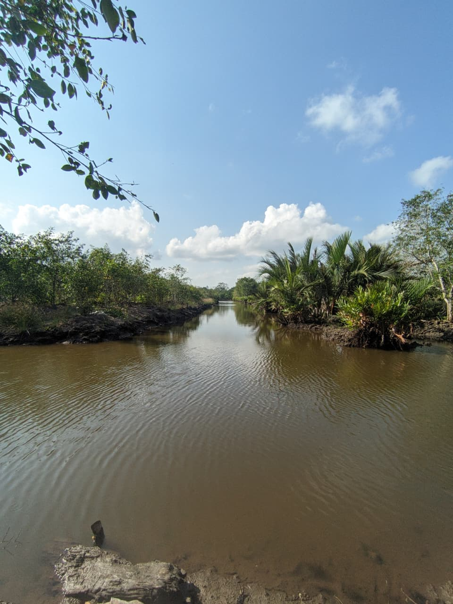

PROFIL
MIT+R IPB menghadirkan inovasi berbasis sains dan teknologi untuk menjawab tantangan lingkungan pesisir melalui pemantauan perairan, rehabilitasi mangrove, dan konservasi keanekaragaman hayati. Kami berkomitmen membangun solusi berkelanjutan melalui kolaborasi strategis demi menciptakan dampak nyata bagi lingkungan dan masyarakat.

Berita
Lorem.
Lorem
Ipsum

lorem
lorem
Pelaksanaan Kegiatan
Perencanaan Kegiatan
Penyusunan konsep awal dan perencanaan kegiatan secara komprehensif.
Pengembangan & Pengadaan
Pencarian dana, pembuatan alat, serta pengujian kendali mutu (quality control).
Persiapan Lapangan
Survei lokasi, pengurusan perizinan, dan persiapan implementasi teknis.
Implementasi Lapangan
Implementasi sistem dan pengambilan data di lapangan.
Analisis Data
Mengolah dan memvisualisasikan data hasil monitoring kegiatan.
Penyusunan Laporan
Penyusunan laporan akhir dan advokasi hasil pengembangan.